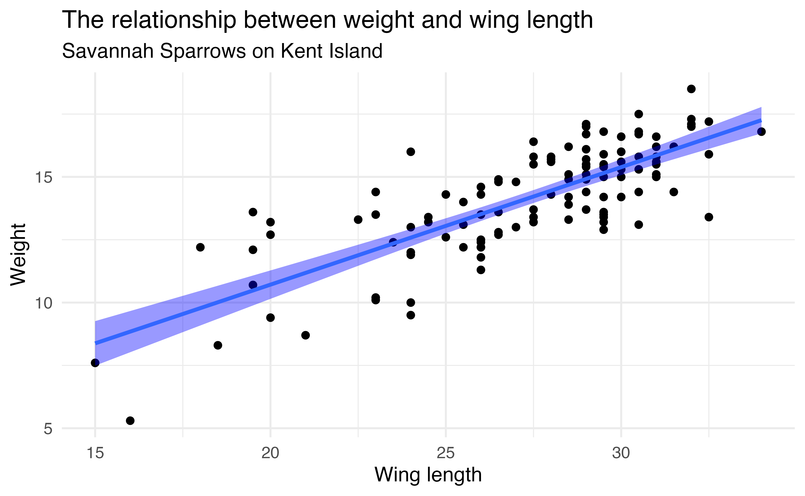
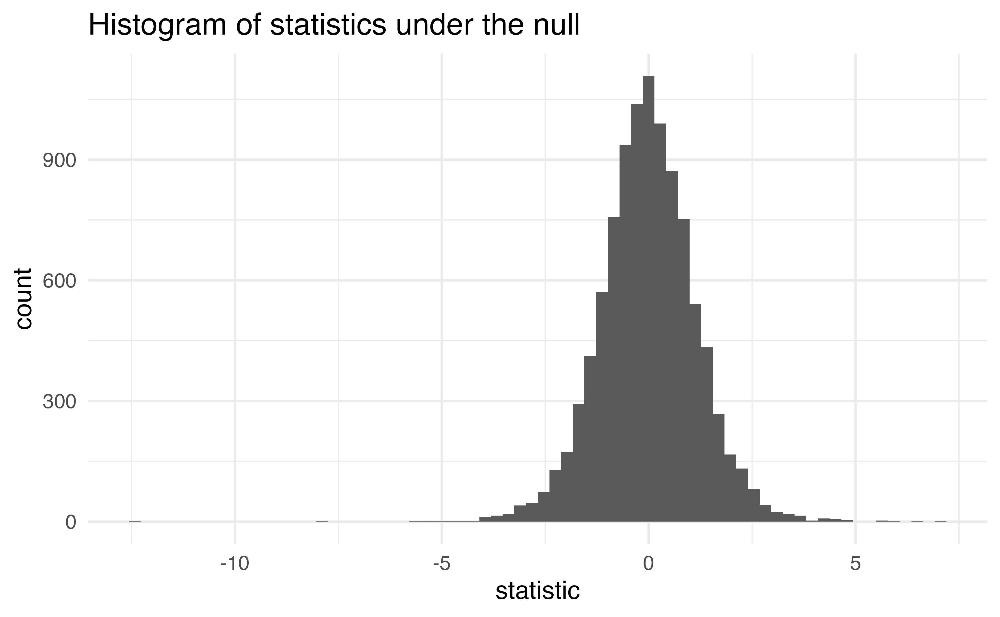
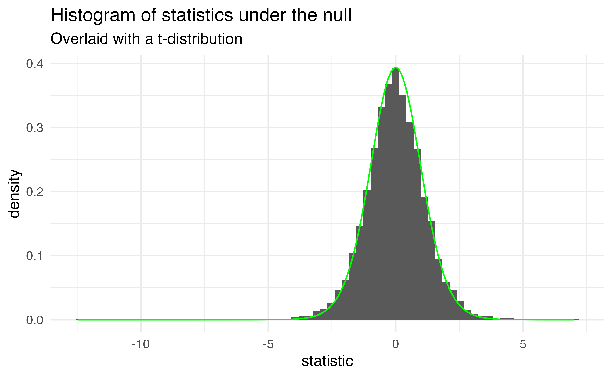
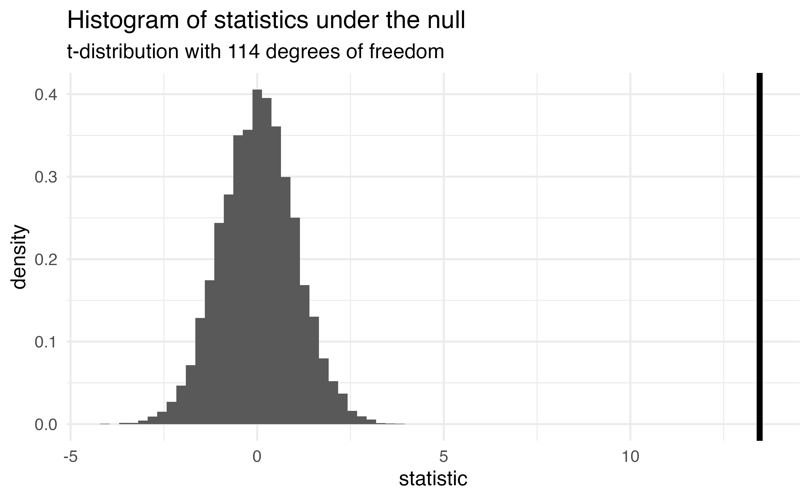
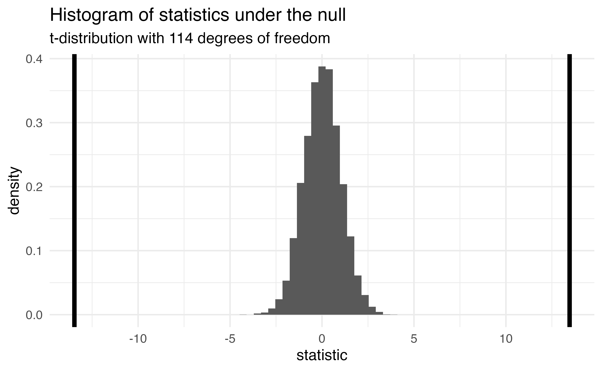
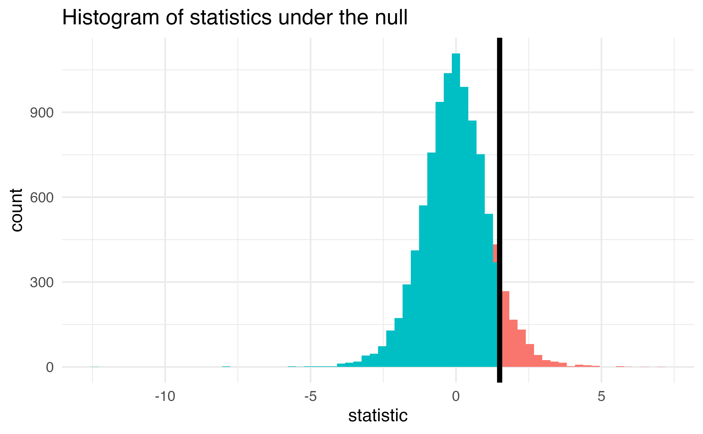
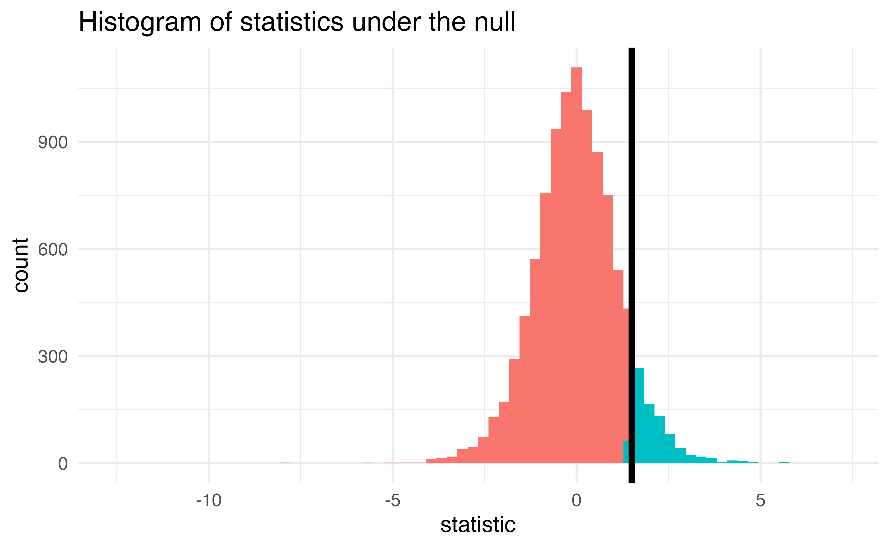
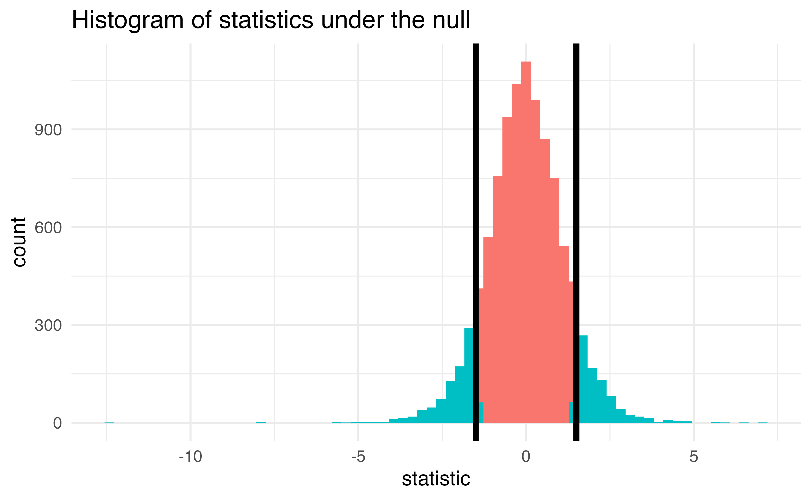

# A tibble: 2 × 5
term estimate std.error statistic p.value
<chr> <dbl> <dbl> <dbl> <dbl>
1 (Intercept) 1.37 0.957 1.43 1.56e- 1
2 WingLength 0.467 0.0347 13.5 2.62e-25Linear Regression in R
Lucy D’Agostino McGowan
Application Exercise
1. Create a new project from this template in RStudio Pro:
2. Load the packages and data by running the top chunk of R code
Let’s look at an example
Let’s look at a sample of 116 sparrows from Kent Island. We are interested in the relationship between Weight and Wing Length

- the standard error of \(\hat{\beta_1}\) ( \(SE_{\hat{\beta}_1}\) ) is how much we expect the sample slope to vary from one random sample to another.
Sparrows
How can we quantify how much we’d expect the slope to differ from one random sample to another?
Sparrows
How can we quantify how much we’d expect the slope to differ from one random sample to another?
Sparrows
How do we interpret this?
# A tibble: 2 × 5
term estimate std.error statistic p.value
<chr> <dbl> <dbl> <dbl> <dbl>
1 (Intercept) 1.37 0.957 1.43 1.56e- 1
2 WingLength 0.467 0.0347 13.5 2.62e-25- “the sample slope is more than 13 standard errors above a slope of zero”
Sparrows
How do we know what values of this statistic are worth paying attention to?
linear_reg() |>
set_engine("lm") |>
fit(Weight ~ WingLength, data = Sparrows) |>
tidy(conf.int = TRUE)# A tibble: 2 × 7
term estimate std.error statistic p.value conf.low conf.high
<chr> <dbl> <dbl> <dbl> <dbl> <dbl> <dbl>
1 (Intercept) 1.37 0.957 1.43 1.56e- 1 -0.531 3.26
2 WingLength 0.467 0.0347 13.5 2.62e-25 0.399 0.536- confidence intervals
- p-values
Application Exercise
- Fit a linear model using the
mtcarsdata frame predicting miles per gallon (mpg) from weight and horsepower (wtandhp). - Pull out the coefficients and confidence intervals using the
tidy()function demonstrated. How do you interpret these?
04:00
Sparrows
How are these statistics distributed under the null hypothesis?
Sparrows

- I’ve generated some data under a null hypothesis where \(n = 20\)
Sparrows

- this is a t-distribution with n-p-1 degrees of freedom.
Sparrows
The distribution of test statistics we would expect given the null hypothesis is true, \(\beta_1 = 0\), is t-distribution with n-2 degrees of freedom.

Sparrows

Sparrows
How can we compare this line to the distribution under the null?

- p-value
p-value
The probability of getting a statistic as extreme or more extreme than the observed test statistic given the null hypothesis is true
Sparrows

Return to generated data, n = 20

- Let’s say we get a statistic of 1.5 in a sample
Let’s do it in R!
The proportion of area less than 1.5

Let’s do it in R!
The proportion of area greater than 1.5

Let’s do it in R!
The proportion of area greater than 1.5 or less than -1.5.

p-value
The probability of getting a statistic as extreme or more extreme than the observed test statistic given the null hypothesis is true
Hypothesis test
- null hypothesis \(H_0: \beta_1 = 0\)
- alternative hypothesis \(H_A: \beta_1 \ne 0\)
- p-value: 0.15
- Often, we have an \(\alpha\)-level cutoff to compare this to, for example 0.05. Since this is greater than 0.05, we fail to reject the null hypothesis
Application Exercise
- Using the linear model you fit previously (
mpgfromwtandhp) - calculate the p-value for the coefficient for weight - Interpret this value. What is the null hypothesis? What is the alternative hypothesis? Do you reject the null?
04:00
confidence intervals
If we use the same sampling method to select different samples and computed an interval estimate for each sample, we would expect the true population parameter ( \(\beta_1\) ) to fall within the interval estimates 95% of the time.
Confidence interval
\[\Huge \hat\beta_1 \pm t^∗ \times SE_{\hat\beta_1}\]
- \(t^*\) is the critical value for the \(t_{n−p-1}\) density curve to obtain the desired confidence level
- Often we want a 95% confidence level.
Let’s do it in R!
linear_reg() |>
set_engine("lm") |>
fit(Weight ~ WingLength, data = Sparrows) |>
tidy(conf.int = TRUE)# A tibble: 2 × 7
term estimate std.error statistic p.value conf.low conf.high
<chr> <dbl> <dbl> <dbl> <dbl> <dbl> <dbl>
1 (Intercept) 1.37 0.957 1.43 1.56e- 1 -0.531 3.26
2 WingLength 0.467 0.0347 13.5 2.62e-25 0.399 0.536- \(t^* = t_{n-p-1} = t_{114} = 1.98\)
- \(LB = 0.47 - 1.98\times 0.0347 = 0.399\)
- \(UB = 0.47+1.98 \times 0.0347 = 0.536\)
confidence intervals
If we use the same sampling method to select different samples and computed an interval estimate for each sample, we would expect the true population parameter ( \(\beta_1\) ) to fall within the interval estimates 95% of the time.
Linear Regression Questions
- ✔️ Is there a relationship between a response variable and predictors?
- ✔️ How strong is the relationship?
- ✔️ What is the uncertainty?
- How accurately can we predict a future outcome?
Sparrows
Using the information here, how could I predict a new sparrow’s weight if I knew the wing length was 30?
# A tibble: 2 × 5
term estimate std.error statistic p.value
<chr> <dbl> <dbl> <dbl> <dbl>
1 (Intercept) 1.37 0.957 1.43 1.56e- 1
2 WingLength 0.467 0.0347 13.5 2.62e-25- \(1.37 + 0.467 \times 30 = 15.38\)
Linear Regression Accuracy
What is the residual sum of squares again?
- Note: In previous classes, this may have been referred to as SSE (sum of squares error), the book uses RSS, so we will stick with that!
\[RSS = \sum(y_i - \hat{y}_i)^2\]
Linear Regression Accuracy
- The total sum of squares represents the variability of the outcome, it is equivalent to the variability described by the model plus the remaining residual sum of squares
\[TSS = \sum(y_i - \bar{y})^2\]
Linear Regression Accuracy
- There are many ways “model fit” can be assessed. Two common ones are:
- Residual Standard Error (RSE)
- \(R^2\) - the fraction of the variance explained
- \(RSE = \sqrt{\frac{1}{n-p-1}RSS}\)
- \(R^2 = 1 - \frac{RSS}{TSS}\)
Let’s do it in R!
lm_fit <- linear_reg() |>
set_engine("lm") |>
fit(Weight ~ WingLength, data = Sparrows)
lm_fit |>
predict(new_data = Sparrows) |>
bind_cols(Sparrows) |>
rsq(truth = Weight, estimate = .pred) # A tibble: 1 × 3
.metric .estimator .estimate
<chr> <chr> <dbl>
1 rsq standard 0.614Is this testing \(R^2\) or training \(R^2\)?
Application Exercise
- Fit a linear model using the
mtcarsdata frame predicting miles per gallon (mpg) from weight and horsepower (wtandhp), using polynomials with 4 degrees of freedom for both. - Estimate the training \(R^2\) using the
rsqfunction. - Interpret this values.
04:00
Application Exercise
- Create a cross validation object to do 5 fold cross validation using the
mtcarsdata - Refit the model on this object (using
fit_resamples) - Use
collect_metricsto estimate the test \(R^2\) - how does this compare to the training \(R^2\) calculated in the previous exercise?
04:00
Additional Linear Regression Topics
- Polynomial terms
- Interactions
- Outliers
- Non-constant variance of error terms
- High leverage points
- Collinearity
Refer to Chapter 3 for more details on these topics if you need a refresher.